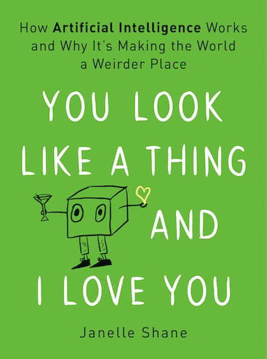

Boeken
Op deze pagina geef ik korte beschrijvingen van de boeken die ik heb gelezen. Van sommige boeken geef ik ook meer uitgebreide recenties; het idee van dit overzicht is dat het een korte chronologische weerslag vormt van de titels die in de tijd langskomen.
Bekijk ook de beschrijvingen van de boeken die ik las in 2022.
Vernietigen
Tja, de nieuwe roman van Michel Houellebecq. Natuurlijk had ik me al voorgenomen deze te lezen op het moment dat ik hoorde dat -ie in het Frans was uitgekomen. Bij Houellebecq wacht ik altijd op de vertaling, want zijn vocabulaire valt niet per se samen met de woorden die je bij Franse les leert of in meer reguliere Franse boeken leest. Soit.
Het boek begint als een spannende detectiveroman. Op internet verschijnen allerlei filmpjes van zeer goed uitgevoerde aanslagen op bijvoorbeeld containerschepen. De daaruitvolgende bedreiging van de wereldhandel zorgt ervoor dat de minister van handel hierbij wordt betrokken; het is zijn raadsman, Paul Raison, die zich als de hoofdpersoon van dit boek ontpopt.
Wanneer de vader van Paul Raison een CVA krijgt, levert dit een confrontatie annex hernieuwde kennismaking met zijn familie op. Die familie komt samen in het landgoed waar de familie tijdens hun jeugd hun vakanties doorbracht, en waar de vader na zijn pensioenering is gaan wonen. De vader, die inmiddels een nieuwe partner had gevonden, moet worden opgenomen in het lokale verzorgingstehuis. Zijn partner wil bij hem in dat verzorgingshuis intrekken en de zeer katholieke zus van Paul besluit met haar partner in de buurt te gaan wonen om bij de verzoring te ondersteunen. De veel jongere broer van de familie begint een soort van affaire met de verzorgster van het verzorgingshuis.
Vernietigen: met een dergelijke titel zou je verwachten dat dit Houellebecq in zijn standaardmodus zou zijn: somber en sinister. En inderdaad, het gebeuren rondom de vader van de hoofdpersoon biedt Houellebecq de mogelijkheid om sociale, economische en politieke problemen van de hedendaagse samenleving te bespreken. Hier herkennen we de onderwerpen waar Houellebecq al sinds 'De Wereld als Mark en Strijd' mee bezig is: het individu dat door het liberalisme volledig op zichzelf is teruggeworpen en probeert een weg (of liefde, of zingeving) te vinden in een nihilistische maatschappij die volledig ontdaan is van transcendente verbanden van religie, cultuur of familie.
Toch is 'Vernietigen' een optimistisch, bijna mild werk. De familie van Raison komt weer nader tot elkaar rondom de CVA van de vader. En ook de relatie van Paul met zijn echtgenote Prudence wordt weer nieuw leven ingeblazen – nadat het jaren op een zeer laag pitje stond. De centrale boodschap van het boek lijkt te zijn (en ook dat hoeft ons niet per se te verbazen als we de schrijver een beetje kenne) dat 'liefde overwint'.
Het fascinerende aan het boek, en daar is al meerdere malen op gewezen, is dat er na een pagina of vijfhonderd een soort van scheiding optreedt: Paul Raison blijkt een ernstige vorm van kaakkanker te hebben. Vanaf dat moment worden de hele opbouw van de aanslagen op containerschepen, de situatie van de vader, de politieke carrière van de minister, of de vernieuwde situatie in de familie Raison niet meer besproken. Allerlei draden die nauwkeurig zijn opgesponnen worden helemaal niet afgehecht. De laatste tweehonderd pagina's van het boek gaan alleen over Paul Raison, zijn vrouw Prudence en hoe zij door het noodlot weer tot elkaar komen. Dit lijkt een literaire doodzonde, omdat het de lezer enigszins berooid achterlaat (nog afgezien van de vraag naar de legitimatie van die eerste paar honderd pagina's).
Toch lijkt Houellebecq hiermee weg te komen. Waarschijnlijk deels omdat het Houellebecq is, maar toch ook zeker omdat het hele boek als een trein leest. Hoewel er eigenlijk niet zo gek veel gebeurt, verveel je je als lezer geen moment. Eigenlijk kabbelt het verhaal een beetje door, wat misschien ook verklaart dat ik het boek in drie dagen uit las. Er staan toch ook wel weer interessante analyses en fraaie passages in:
Door meer waarde toe te kennen aan het leven van een kind, ontzeggen we onze werkelijke verrichtingen elke waarde. Onze heldhaftige of edelmoedige daden, alles wat we hebben weten te bereiken, onze prestaties, onze creaties, niets daarvan heeft in de ogen van de wereld nog enig belang. Daarmee ontnemen we het leven elke motivatie en elke betekenis, en dat is nu precies wat men nihilisme noemt. (p.355)
Ik vraag me af wat ik van het werk had gevonden als het niet van Houellebecq was geweest. Het is lang niet zo'n aardverschuiving als Platform of Elementaire Deeltijd, maar misschien eigelijk wel interessanter dan Serotonine. De mildheid, de goede afloop en het literaire experiment zorgen ervoor dat dit boek niet de typische Houllebecq is. Ik heb het met veel plezier gelezen, maar hoop dat het volgende werk weer wat meer vuur (en minder pagina's) heeft.

Michiel Houellebecq: Vernietigen
Amsterdam: De Arbeiderspers
Oorspronkelijke titel: Anéantir
Vertaald uit het Frans door Martin de Haan
572 pagina's, inclusief tekeningen door de auteur (!)
Uitgelezen: 15 maart 2023
Omarm de Chaos
Dit boek kreeg ik van een goede vriend van me (die me onlangs ook nog naar m'n mening hierover vroeg) en daarom voelde ik wel een zekere verplichting om het ook te lezen. Hoewel de centrale these van het werk op zich interessant en relevant genoeg is (we leven niet in een tijdperk van veranderingen maar in een verandering van tijdperk) heb ik me er eerlijk gezegd wel erg toe moeten zetten om het boek ook daadwerkelijk uit te lezen.
Jan Rotmans is hoogleraar Duurzaamheid en Transities aan de EUR en mede-oprichter van Urgenda (samen met Louise Vet, waarvan ik dan weer wél weet wie het is), dus zeker wel iemand die ideeën en opvattingen heeft over de vele problemen waar we momenteel (als staat, als mens, als soort) mee te maken hebben. In het boek komt hij dan ook met een overzicht van die verschillende crises, probeert hij te analyseren waar die vandaan komen en poneert hij ook mogelijke oplossingsrichtingen. In die zin in het zeker een lezenswaardig boek.
Toch heb ik moeite gehad het uit te lezen. Dat zat hem in een aantal zaken, niet in de laatste plaats de toon van de tekst: door continu de lezer direct aan te spreken (en dan ook nog in een tutoyerende vorm) lijkt het alsof Rotmans zijn lezers als kleine kinderen beschouwt die door papa verteld moeten worden wat er gebeurt en hoe het zit. Zijn neiging om meer dan eens autobiografisch uit te wijden (bijvoorbeeld p.54, waar hij uitgebreid verslag doet over zijn promotie-onderzoek, of p.71 wanneer hij vertelt over zijn vakantiewerk, of opnieuw p.87, waar hij het heeft over de waterschappen, of ...) maakt ook duidelijk dat hij wel érg tevreden is met zichzelf – wat maakt het de lezer uit dat hij eerst geen en later wel ambtenaar had willen worden, net als zijn vader?
Bezwaarlijker dan deze stylistische problemen (die, toegegeven, grotendeels een smaakkwestie zijn) vind ik evenwel de methodologische onvolkomenheid van het werk, die er voor mij in bestaat dat Rotmans nalaat zijn kernbegrippen goed te operationaliseren. Zo gaat bijvoorbeeld één van zijn belangrijkste analyses in op de verhouding tussen mensen en systemen, maar nergens wordt duidelijk gemaakt wat een systeem volgens hem is – zijn dat de democratische instituties? De samenleving? Bedrijven?
En zo strooit hij het hele boek door met termen en theorieën die verder niet worden toegelicht of uitgewerkt: te vaak schreef ik 'wat?' of 'wie?' in de kantlijn. Hetzelfde geldt voor de meeste grafieken die zijn toegevoegd: er is daarbij niet duidelijk wat er op de assen wordt weergegeven. Of wat te denken van de interne inconsistentie. Zo is net vóór het onderstaande citaat uitgebreid betoogd dat onrust en frictie goed zijn, omdat er anders niets gebeurt:
[Als] je inziet inziet en begrijpt dat chaos, instabiliteit en dus onrust eigen zijn aan de ontwikkeling van complexe systemen zoals onze samenleving, economie en ons mensen zelf, dan kan dat je al een hoop rust geven. (p.42)
Hier zit iets Gödel-achtigs in: als je weet dat de mens fundamenteel onrustig is, levert je dat rust op...
Dit alles geeft het boek een zweem van 'ik weet hoe het zit en jullie (sic) moeten goed naar me luisteren, dan komt het wel goed'. Rotmans laat na de uitgebreide literatuur die over al zijn besproken onderwerpen bestaat ter hand te nemen. Bijvoorbeeld wanneer hij spreekt over hoe bedrijven wendbaar moeten zijn om in het huidige tijdsbestek te kunnen overleven (pp.95ff.): dit is al diepgaand geïdentificeerd en beschreven door Zygmunt Bauman in zijn onvolprezen Liquid Modernity. Of waarom niet gerefereerd aan Pine and Gilmore's klassieke Experience Economy wanneer het verschil tussen bezit en services wordt geanalyseerd (pp.100-101)? Ik kan me niet voorstellen dat Rotmans vanuit zijn positie deze werken niet kent, dus de omissies moeten intentioneel zijn.
Wat Rotmans wél aanhaalt zijn vooral zijn eigen publicaties. Wanneer je de referenties bekijkt (die per hoofdstuk zijn opgedeeld en waar geen duidelijke structuur in is aangebracht) valt op dat ongeveer de helft hiervan werken van Rotmans zelf, of aan hem gelieerde personen bevat. Opvallend in dezen is dat wanneer er in het boek gebruik gemaakt wordt van voetnoten, ook hier het in twee van de drie gevallen een referentie van dezelfde auteur bevat.
Het meest lezenswaardig vond ik Hoofdstuk 6, waarin Rotmans een beeld schetst van Nederland in 2121. Dit hoofdstuk leest als een fijne science-fictionroman, maar dan voorzien van veel en mooie plaatjes. Vanzelfsprekend overstijgt ook deze science-fiction het niveau van speculatieve filosofie (Keijzer 2010) niet, maar in dit geval weet je als lezer tenminste zeker dat het allemaal speculatief is.
Omarm de chaos is, ondanks de bijzonder fraaie typografie (van Zeno Carpentier Alting die verder niet te vinden is), niet het meest fijne boek dat ik ooit heb gelezen. Het is kortweg te ongenuanceerd, te oppervlakkig en te veel egodocument om werkelijk de impact te kunnen hebben die de auteur voor ogen staat.

Jan Rotmans en Mischa Verheijden: Omarm de Chaos
Breda:De Geus 2021
289 pagina's plus 11 pagina's referenties
Uitgelezen: 1 maart 2023
Plato in tijden van Photoshop
Ger Groot ken ik eigenlijk vooral van z'n columns die hij tot een paar jaar geleden voor Trouw schreef. Ik heb een aantal keer met zijn De Geest uit de Fles in m'n handen gestaan, maar om de één of andere reden heb ik dat nooit gekocht. Dit kleine boekje wel – volgens mij om weg te geven, maar ik kreeg het een paar maanden terug terug.
In dit boekje passeren vijfentwintig denkers, van Plato via Aquino tot Arend en Taylor, de revue. Voor iedereen is drie pagina's ingeruimd die vooraf worden gegaan door een illustratie (of eigenlijk collage) die reflecteert wat Groot over de denker in kwestie te melden heeft. Zo wordt bijvoorbeeld Descartes weergegeven met een grote opwindsleutel in z'n rug om hem als een mechanische pop voor te stellen. Of wordt het hoofdstuk over Sartre (Vrijheid boven alles) voorafgegaan door een afbeelding van het Vrijheidsbeeld, maar nu met bril en pijp.
Het boekje is specifiek geen introductie in de filosofie – daarvoor is drie pagina's per persoon natuurlijk ook veel te weinig. Hoewel elk hoofstuk wordt afgesloten met een korte biografische notitie, gaat het er vooral om duidelijk te maken wat de denkers ons nu nog te melden hebben. De centrale thesen en ideeën van de filosofen worden kort toegelicht en in een hedendaagse context geplaatst.
Drieënhalve eeuw later zijn die vragen nog altijd nog opgelost. Oog in oog met cybernetica en neurowetenschap lijken Spinoza's dilemma's nu pas hun ware tol te eisen. (p.57)
De mens is niet de Meester van het Zijn, maar de hoeder ervan – dat betekent: de werkelijkheid is niet de passieve grondstof van ons handelen, maar datgene wat ons bestaan mogelijk maakt. Het ecologisme beweert niets anders. (p.92)
Met deze opzet heeft Groot een heel leuk, leerzaam en actueel boekje opgeleverd, dat tegelijkertijd de mogelijkheid biedt wijsgerige stromingen in een breder historisch narratief te plaatsen. De keuze van de denkers lijkt wat arbitrair (waarom wel Taylor opgenomen – als enige nog levende denker – en niet Bruno Latour, bijvoorbeeld?), maar dat laat onverlet dat het een leuk en fraai vormgegeven boekje is.
Ik begrijp werkelijk niet waarom ik het heb teruggekregen van degene aan wie ik het had gegeven - maar ik kan ook niet zeggen dat ik het heel erg vind.

Ger Groot: Plato in tijden van Photoshop
Met illustraties van Mrc Suvaal
Rotterdam: Lemniscaat, 2014
133 pagina's
Uitgelezen: 26 februari 2023
Bullshit Jobs
Dit boekje kregen we afgelopen november voor onze gezamenlijke verjaardag en ik heb het een beetje tussn de bedrijven voor gelezen. Op zich een interessant boekje met een aardige analyse maar een volgens mij verkeerde conclusie.
Bullshit Jobs is de uitgebreide versie van een artikel door dat dezelfde auteur in 2013 schreef in het tijdschrift Strike!: On the Phenomenon of Bullshit Jobs. In dat artikel stelt David Graeber de vraag wat het zou betekenen wanneer de werkzaamheden waarvan iedereen vermoed dat ze zinloos zijn, ook daadwerkelijk zinloos zijn. Zelf zo zinloos zijn, dat ze zelfs door de mensen die ze uitvoeren als zinloos worden ervaren...? In dit boekje vervolgt en verdiept hij zijn analyse, wat tot veel interessante inzichten leidt.
Het boek begint met de operationalisering van bullshit jobs. Hij beschrijft mensen wier werk eruit bestaat computers van millitairen van de ene naar de andere ruimte te verplaatsen; of mensen die tijdens hun betaalde arbeid zó weinig te doen hebben dat ze in werktijd een hele studie van Spinoza hebben gemaakt; of mensen wier werk eruit bestaat anderen gerust te stellen dat de beloofde arbeid echt wel gedaan gaat worden (pp. 1-9). Zijn uiteindelijke definitie heeft een belangrijke subjectieve component: degene die een bullshit job heeft, moet er zelf ook van overtuigd zijn dat zijn werk niets van waarde toevoegt.
Na het definiëren van deze sleutelterm gaat Graeber verder op de verschillende soorten bullshit jobs. Hij onderscheidt er uiteindelijk vijf:
- De flunkies: banen die er alleen maar zijn om andere belangrijk te doen lijken (pp. 28-36)
- De goons: banen met een zekere agressiviteit maar die alleen maar bestaan omdat anderen ervoor betalen (pp.36-40)
- De duct tapers: banen die bestaan om problemen op te lossen die niet zouden moeten bestaan (pp.40-45)
- De box tickers: banen die eruit bestaan om mensen te doen geloven dat een organisatie iets doet wat het eigenlijk niet doet (pp.45-50)
- De taskmaskers: banen die eruit bestaan werk aan anderen te bedelen, die dit ook prima zelf zouden kunnen bedenken.
Na deze classificatie volgt een interessante analyse over het verschijnsel dat veel mesnen werken om het werken zelf en de historische oorsprong daarvan. Als gevolg van de industriële revolutie gaan werknemers hun belangrijkste asset, namelijk hun tijd, aan de werkgever verkopen; die werkgever wil dan wel waar voor zijn geld, wat tot gevolg heeft dat werknemers liever doen alsof ze druk bezig zijn dan dat ze niks doen. Hieruit volgt het fenomeen dat mensen trots zijn op hoe druk ze zijn. Voor mij persoonlijk was dit een waardevolle en verhelderende analyse.
Helaas gaat het na ongeveer de helft van het boekje wat mij betreft mis. Graeber vervalt dikwijls in herhalingen en komt te vaak met anekdotisch bewijs. Het lijkt erop dat hij er uiteindelijk voor pleit het fenomeen van betaalde arbeid als zodanig af te schaffen, zodat mensen gewoon kunnen doen wat ze willen - een bekend verhaal natuurlijk, dat vooral door de voorstanders van een basisinkomen vaak wordt aangehaald. Maar net als die verdedigers gaat Graeber voorbij aan het gevoel van zelfwaardering dat het resultaat is van iets doen waar je niet per se zin in hebt maar waar je wel voor betaald wordt.
Kortom, een leuk en lezenswaardig boekje dat echt wel waardevolle en relevantie inzichten biedt, maar wat er wat mij betreft niet in slaagt de vragen en problemen die het oproept op een fundamentele en diepgravende manier te adresseren.

David Graeber: Bullshit Jobs. The Rise of Pointless Work and What We Can Do About It.
Penguin Book, 2018
285 pagina's, gevolgd door 24 pagina's noten en literatuurlijst
Uitgelezen: 10 februari 2023
Weapons of Math Destruction
Dit was het derde (en voorlopig laatste) boekje dat ik las in het kader van voorbereidingen voor de nieuwe minor AI en beroep. En ik moet zeggen dat dit ook het meest interessante en leuke boekje was, hoewel ook dit weer met zo'n honderd pagina's minder had gekund.
De schrijfster, Cathy O'Neil, is doctor in de wiskunde (Harvard), heeft haar academische carrière vaarwel gezegd om in finance te gaan werken en is daar zo van geschrokken dat ze deel werd van de Occupy Wall Street beweging en voor zichzelf is begonnen. Deze autobiografische ontboezemingen waarmee het boekje opent zijn minder triviaal dat ze lijken: ze verlenen geloofwaardigheid aan de voorbeelden en problemen die ze in de rest beschrijft. Ze is goed ingevoerd in de materie, heeft machine learning modellen ontwikkeld en hun werking van dichtbij meegemaakt.
Haar idee is dat machine learning modellen vaak worden ingezet als een Weapon of Math Destruction – een WMD. Om als WMD te kunnen worden geclassificeerd, moet een model aan drie eigenschappen voldoen (pp.28ff.):
- Het model ondoorzichtig,
- Het model heeft zowel positieve als negatieve effecten,
- Het model heeft de mogelijkheid om massaal te worden ingezet.
Dus een model (om haar voorbeelden te bespreken) dat gebruikt wordt om individuele basketbalspelers in een ranglijst te zetten is geen WMD: het is individueel, de spelers kennen de regels van het spel en domein is behoorlijk strikt. Ook de keukengeheimen van O'Neil zelf zijn geen WMD: hoewel het lastig is om dit model volledig transparant te maken, is het domein ook hier behoorlijk beperkt en heeft het alleen betrekking op haar directe familie. Een model dat gebruikt wordt om de kans op recidive te voorspellen, daarentegen, geldt wel als een WMD: het is niet duidelijk hoe het model getraind wordt, het heeft de neiging bepaalde bevolkingsgroepen meer te benadelen dan andere en het wordt massaal (federaal) ingezet.
Het grote probleem dat O'Neil met modellen ervaart – waardoor deze in een WMD veranderen – is dat ze in een neergaande spiraal annex feedback-loop terecht komen. Het standaard-voorbeeld dat ze bespreekt is dat van de data die voorspelt dat er in arme wijken meer straatroven plaats zullen vinden. Als gevolg daarvan wordt er daar meer gepatrouilleerd, waardoor er meer mensen worden aangehouden. Waaruit dus zou blijken dat het model het bij het rechte eind heeft, waardoor er nog meer gepatrouilleerd gaat worden; enzovoort. Het aloude adagium: als je meer gaat zoeken zul je ook meer vinden.
Bij dit zoeken wordt verder niet altijd gebruik gemaakt van ter zake doende eigenschappen van de data: dikwijls worden proxies gebruikt in plaats van werkelijke gegevens. Zo wordt een autoverzekering goedkoper wanneer je credit score in orde is: wanneer je weinig geld leent en netjes je hypotheek betaalt, wordt je autoverzekering goedkopen. De gedachte is dat mensen die goed met geld om kunnen gaan ook goed voor hun auto zullen zorgen.
Met de hoeveelheid data die tegenwoordig beschikbaar is, en de manier waarop bedrijven en organisaties daarmee omgaan, onstaat was O'Neil de move to the individual noemt (p. 164): er wordt gekeken naar heel specifieke individuele verschillen om bijvoorbeeld de hoogte van een verzekering te bepalen. Maar vaak kun je het niet helpen dat je regelmatig door omveilige wijken rijdt, dat je 's nachts moet rijden of een rommelige oude auto hebt. De modellen zien niet de achterliggende redenen van de waarden van de proxies.
Om deze reden moeten we, zo is haar conclusie, oog houden voor de ethische en morele component van de data waarop de modellen getraind worden:
[The] models are constructed not just from data but from the choices we make about which data to pay attention to – and which to leave out. Those choices are not just about logistics, profits, and efficiency. They are fundamentally moral. (p.218)
De werking van die WMD wordt door haar in verschillende domeinen in evenzovele hoofdstukken uitgewerkt: opleiding, reclames, rechtspraak, solliciteren, werken, en verzekeren. Het is jammer (en dit is eigenlijk mijn enige echte kritiekpunt) dat dit ertoe leidt dat je vaak het idee hebt hetzelfde te lezen. Dat stelt ze zelf ook ("it's all the same birds of a feather"), maar ze verzuimt dit zelfde expliciet te maken. Ze laat na om te abstraheren van de concrete voorbeelden die ze geeft, waardoor het lastig wordt exact te duiden wat nu de algemene tendens van die WMD is.
Een ander punt van kritiek, dat hiermee samenhangt, is dat het boekje wat langdradig wordt. Door steeds hetzelfde punt vanuit weer een ander perspectief te benoemen krijg je als lezer de neiging te zeggen 'Nou weet ik het wel'. Hoewel het een leuk boekje is, zou het met minder pagina's en meer diepgang werkelijk goed geworden zijn.

Cathy O'Neil: Weapons of Math Destruction. How Big Data Increases Inequality and Threatens Democracy.
New York:Crown, 2017
213 pagina's, gevolgd door 44 pagina's noten, literatuurlijst en index
Uitgelezen: 5 februari 2023
Artificial Unintelligence
Dit was het tweede boekje dat ik las in het kader van de selectie voor onze nieuwe minor AI en beroep en ik moet zeggen dat ik dit een stuk minder vond dan het eerste. Het begint heel aardig met een paar hoofdstukken over hoe computer werken, hoe programmeertalen werken en wat de auteur voor werk doet (part 1: pp.3-48). Maar vanaf dat moment wordt het werk eigenlijk meer een politiek manifest over hoe het domein van programmeren en informatica niet voldoende divers, inclusief en vrouwvriendelijk is.
Sure, ze heeft een punt dat daar best wel wat aan verbeterd kan worden. Maar in haar analyse is het hele vakgebied inherent verkeerd omdat de oorsprong ervan kan worden getraceerd tot in de negentiende eeuw, wanneer blanke mannelijke wiskundigen en engineers machines gingen bouwen in plaats van iedereen een opleiding en een baan te geven:
Whether they realized it consiously or not, nineteenth-century mathematicians and other scientists had a choice. One option was to enact social change (emancipation, universal suffrage, breaking down class barriers) and develop the existing workforce by allowing all the people who weren't elite white man greater access to education and train these workers for jobs. Another option was to settle for the status quo and build machines that could do the work. They built machines. (p.78)
Vanaf daar ging het eigenlijk allemaal bergafwaards. De seksuele intimidatie van Marvin Minky (p.69), het experimenteren met drugs door Steve Jobs (p.70) of de (vermeende?) sociale onaangepastheid van (zelfs) Alan Turing (p.74) doordesemen nog heden ten dage het hele vakgebied van computerkunde en daardoor zijn de algoritmen die hierdoor bedacht en uitgewerkt worden eigenlijk politiek niet correct.
Afgezien van deze politieke opvattingen is het werk niet heel diepgaand. Het is duidelijk dat Broussard eerder journalist dan wetenschapper is. De twaalf hoofdstukken staan erg op zichzelf, bevatten behoorlijk wat autobiografische verhalen en anekdotes en hebben we wat te veel herhalingen. Haar avonturen in de zelfrijdende auto (H8) of de startup-bus (H10) zijn grappig om te lezen, maar voegen eigenlijk weinig toe aan het eigenlijke onderwerp van het werk (als er al een punt is in dergelijke hoofdstukken, heeft ze wel erg veel pagina's nodig om dat te maken).
Als voorbeeld van een machine learning project maakt ze een uitwerking van de titanic dataset. Een goed voorbeeld, maar het heeft volgens mij weinig zin om zes pagina's met data te laten zien (pp.104-111), of zelfs maar de Python-code die ze gebruikt om dit te genereren: ik denk dat deze pagina's overgeslagen door zowel lezers die wél als lezers die níet kunnen programmeren. Het (overigens zeer valide) punt dat ze in het betreffende hoofdstuk wil maken (dat het gaat om een model, en dat de werkelijkheid weerbarstig is), had ze ook zonder deze toevoegingen kunnen maken.
Broussard beklaagt zich op verschillende plekken over de ondervertegenwoordiging van vrouwen in zowel de geschiedenis van de informatica als de brede discussie over de rol en positie van AI. Hierbij gaat ze volledig voorbij aan de belangrijke vrouwen die er wél zijn geweest (Ada Lovelace, Joan Clarke, Grace Murray Hopper), en aan de grote invloed van de hedendaagse vrouwelijke denkers en schrijvers op dit gebied (Susan Kozel, Janet Murray, Martha Nussbaum, Carolyn Jennings) - schrijvers die fundamenteler en diepzinniger over deze materie denken en schrijven dan zij zelf.
Al met al een interessant boek: al is het alleen maar om aan te tonen dat interessante titels en onderwerpen niet altijd tot goede boeken hoeven te leiden. Een paar anekdotes, termen en ideeën zal ik er nog wel uit overnemen, maar verder zal ik studenten (en collega's) afraden dit boekje te lezen.

Meredith Broussard: Artificial Unintelligence. How Computer Misunderstand the World.
Boston, MA:MIT Press, 2018
199 pagina's, gevolgd door 38 pagina's noten, literatuurlijst en index
Uitgelezen: 20 januari 2023
You Look Like A Thing
Komend semester begint de opleiding met een nieuwe minor: AI en beroep. Omdat dit een brede minor is, die voor alle studenten van de Hanze open staat, en omdat men mij gevraagd had hier een kleine rol in te spelen, leek het me zinvol om eens wat boekjes te lezen die dit vakgebeid vanuit een breder, niet technisch perspectief bespraken. Afgelopen december bestelde ik drie van dergelijke boekjes en You Look Like A Thing was het eerste dat ik van die trits las.
Janelle Shane kende ik vanuit het onderdeel ARTificial, dat een tijdje onderdeel van onze minor Design, Art and Technology was. Zij is onderzoeker in Colorado, waar ze hologrammen maakt voor hersenonderzoek. Maar in het kader van beide minoren zit mijn interesse vooral in haar bijzonder leeswaardige blog, waarin ze allerlei rariteiten van Machine Learning projecten bespreekt. In dit blog stelt ze machine learning algoritmen aan de kaak, door ze vreemde vragen te stellen of juist uit te zoeken op welke dataset ze getraind zijn. Bij ARTificial keken we naar haar presentatie die ze in 2018 hield voor de Strange Loop Conference.
Die rariteiten vormen ook het leitmotiv van het boekje. In tien hoofdstukken vertelt ze hoe verschillende algoritmen leren en wat de problemen daarvan zijn. Het is me niet helemaal duidelijk waar die hoofdstukindeling op is gebaseerd (waarom het ene verhaal nu in dit hoofdstuk en niet in een ander staat), maar dat maakt voor de lezenswaardigheid niet uit.
Haar belangrijkste observatie lijkt te zijn dat machine learning projecten in principe altijd met een antwoord op de vraag komen, maar dat het antwoord niet altijd realistisch, nuttig of zelfs maar bruikbaar is. Zo gebruikte artiest / onderzoeker Joel Simon een algoritme om de ideale klasindeling van een schoolgebouw te bepalen – wat een school opleverde waarvan nagenoeg geen enkel lokaal een raam, ventilatie of nooduitgang had (p.146). Of een AI die de beste manier had gevonden om niet dood te gaan in een computerspel: pauzeer het spel tot in het oneindige.
Ondanks dat de bewijsvoering in het boekje wat anekdotisch is, slaagt Shane er wel in om de achterliggende technieken – en de hieruit voortvloeiende problemen – goed over het voetlicht te brengen. Ze weet duidelijk waar ze het over heeft, kan deze materie in een wat breder maatschappelijke context plaatsen en kan hier op een goede en onderhoudende manier over schrijven. Ik moest af en toe echt glimlachen om de voorbeelden die ze geeft. Het boekje is voorzien van illustraties die voor mijn smaak wat te kinderachtig zijn, maar voor anderen wellicht juist wat lucht geven.
Natuurlijk moet ze ook even uitleggen hoe machine learning eigenlijk leert. Dat doet ze in hoofdstuk 3 (pp.61-108), maar ik ben blij dat ik al weet hoe dat werkt, want op basis van haar uitleg zou ik dit niet begrepen hebben.
Al met al een fijn, informatief en goed leesbaar boekje dat zeker een toegevoegde waarde zou kunnen hebben in zowel een kunstzinnige als meer technische minor.

Janelle Shane: You Look Like A Thing and I Love You.
How Artificial Intelligence Works and Why It's Making the World a Weirder Place.
London:Headline Publishing Group, 2019
238 pagina's, gevolgd door 22 pagina's noten en index.
Uitgelezen: 6 januari 2023